|


|
Zeeleeuwen en blue footed boobies
» exacte locatie
 Vandaag hebben we echt een supertoertje gemaakt! Marc en Svenja van Yagoona gingen ook mee, in totaal zes mensen met een gids in een motorbootje. Andere bootjes waren behoorlijk vol gepropt dus we waren wel blij met deze, ook omdat 'ie lekker snel en overal als eerste was, hadden we de mooie plekjes eerst voor ons zelf ;-). We begonnen bij een eilandje, La Loberia, waar we met zeeleeuwen gingen snorkelen. Plons... Koud!!! Brrrrr, het water was erg fris maar dat waren we binnen een paar minuten vergeten,
want daar waren ze! Wauw! Wat een ervaring! Ze zwommen recht op ons af en maakte de mooiste kunstjes onder water. Een hele grote met een heleboel kleintjes, echt een heerlijk schouwspel. Op de volgende snorkelplek zwommen een stuk of 5 reuzeschildpadden. Ook deze beesten waren helemaal niet bang en je kon er gewoon naast zwemmen, mooi mooi mooi. Daarna met het bootje naar een rots in zee waar we de blue footed boobie goed konden zien. Erg grappige vogels, ik vond ze een beetje op pinguins lijken.
Je zou haast denken dat ze gewoon door een bak verf zijn gewandeld, maar ze hebben allemaal net een andere tint blauwe poten. Tot slot nog een wandelingetje gemaakt door een droog landschap met cactussen die op een soort boomstam groeien via een lavasteenpaadje naar een strandje en nog meer zeeleguanen gezien en sally lightfoot crabs, knalrode grote krabben. Er lijkt geen eind te komen aan deze interactieve dierentuin, er is zoveel moois te zien!
Vandaag hebben we echt een supertoertje gemaakt! Marc en Svenja van Yagoona gingen ook mee, in totaal zes mensen met een gids in een motorbootje. Andere bootjes waren behoorlijk vol gepropt dus we waren wel blij met deze, ook omdat 'ie lekker snel en overal als eerste was, hadden we de mooie plekjes eerst voor ons zelf ;-). We begonnen bij een eilandje, La Loberia, waar we met zeeleeuwen gingen snorkelen. Plons... Koud!!! Brrrrr, het water was erg fris maar dat waren we binnen een paar minuten vergeten,
want daar waren ze! Wauw! Wat een ervaring! Ze zwommen recht op ons af en maakte de mooiste kunstjes onder water. Een hele grote met een heleboel kleintjes, echt een heerlijk schouwspel. Op de volgende snorkelplek zwommen een stuk of 5 reuzeschildpadden. Ook deze beesten waren helemaal niet bang en je kon er gewoon naast zwemmen, mooi mooi mooi. Daarna met het bootje naar een rots in zee waar we de blue footed boobie goed konden zien. Erg grappige vogels, ik vond ze een beetje op pinguins lijken.
Je zou haast denken dat ze gewoon door een bak verf zijn gewandeld, maar ze hebben allemaal net een andere tint blauwe poten. Tot slot nog een wandelingetje gemaakt door een droog landschap met cactussen die op een soort boomstam groeien via een lavasteenpaadje naar een strandje en nog meer zeeleguanen gezien en sally lightfoot crabs, knalrode grote krabben. Er lijkt geen eind te komen aan deze interactieve dierentuin, er is zoveel moois te zien!
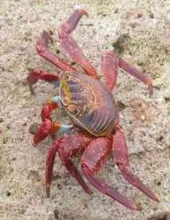
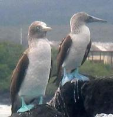
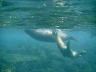
|
|
|

Reuzeschildpadden
» exacte locatie
We zijn op dit moment echt op vakantie. Het plaatsje waarbij we voor anker liggen is gezellig met veel cafes en restaurantjes, op het eiland is van alles te doen en de worsteling met wind en zee zijn we al weer bijna vergeten. Op de Galapagos eilanden leven grote schildpadden. Het bijzondere is dat elk eiland zijn eigen specifieke schildpadvariant heeft, volledig aangepast aan de omgeving van dat eiland. Op een eiland hebben ze bijvoorbeeld een langere nek omdat daar de struiken waar ze van eten
hoger zijn. Maar sinds de komst van de mens hier veranderen de omstandigheden wel erg snel. Doordat dieren meekomen die hier niet thuis horen of doordat men de schildpadden gewoon bruut afslachtte voor hun vet of vlees. Veel soorten stonden daardoor op uitsterven. Het Charles Darwin centrum is een beschermde omgeving waar de schildpadden kunnen opgroeien totdat ze weer op hun thuiseiland worden uitgezet. We zijn er vandaag wezen kijken. Die gigantische schildpadden waren heel indrukwekkend. Totaal
niet bang en heel traag. Ook hebben we Lonesome George gezien. Een hele oude schildpad van een soort waar hij de laatste van is en als hij sterft is de soort ook meteen uitgestorven. 's Middags zijn we naar het strand geweest. Er liepen daar her en der zwarte leguanen rond van ongeveer een meter lang. Ook weer helemaal niet bang voor ons waardoor je ze bijna kon aaien. Verder zwommen er haaien in het water. Vanaf onze handdoek op het zand kijkend naar het water zagen we af en toe een vinnetje boven
komen. Het was net mini-jaws, want zulke grote haaien waren het nou ook weer niet. Na een frisse duik zijn we via de chocolade-softijs tent terug naar de boot gegaan.
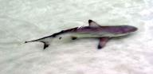
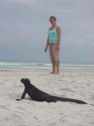
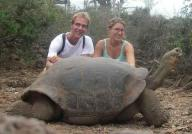
|
|
|
Ja, we zijn er!
» exacte locatie
Vanmorgen om acht uur zijn we aangekomen op Santa Cruz, het
hoofdeiland van de Galapagosgroep. We zijn precies achtien etmalen
onderweg geweest en dat was wel genoeg. Alhoewel, we hoorden vandaag
dat het record voor deze passage op 31 staat, dus het kan nog
slechter. We hadden net het anker laten vallen en toen werden we
meteen welkom geheten door een Nieuw Zeelandse boot die Ilse in Colon
al had leren kennen. Ze nodigden ons uit voor een serieus ontbijt! Dat
was echt fantastisch met brood en gebakken eieren met avocado. Wij
hadden gisteren op de valreep nog een flinke tonijn gevangen en we
hebben hen en ook Marc en Svenja van Yagoona uitgenodigd om deze
vanavond bij ons te komen opeten. Het is hier meteen duidelijk dat er
heel veel dieren leven. Binnen een kwartier hadden we al een zeeleeuw
en twee roggen gezien, vlak bij de boot. In de stad zie je hagedissen
rondwandelen en in de bomen hangen pelikanen rond. We hebben er echt
zin in om dit eiland verder te gaan bekijken. Je schijnt te kunnen
snorkelen tussen de haaien en ook schildpadden kun je natuurlijk
bekijken.
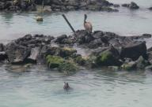
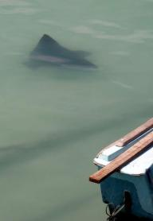
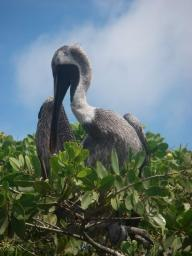
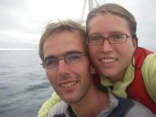
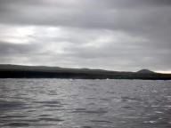
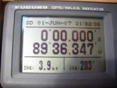
|
|
|

|

|
|
|